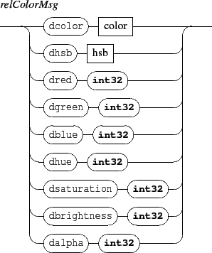

Next: 4.2.1 Absolute color messages
Up: 4. Common components messages
Previous: 4.1.4 Components transformations
Contents
Index
4.2 Color messages

Color messages are absolute or relative color control messages.
Subsections
Grame - Interlude project [ANR-08-CORD-010]